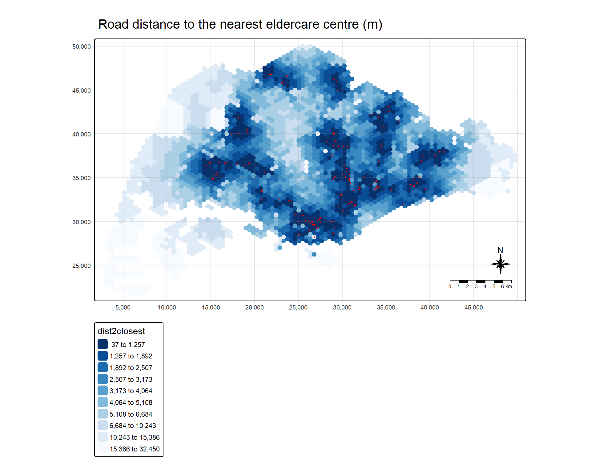
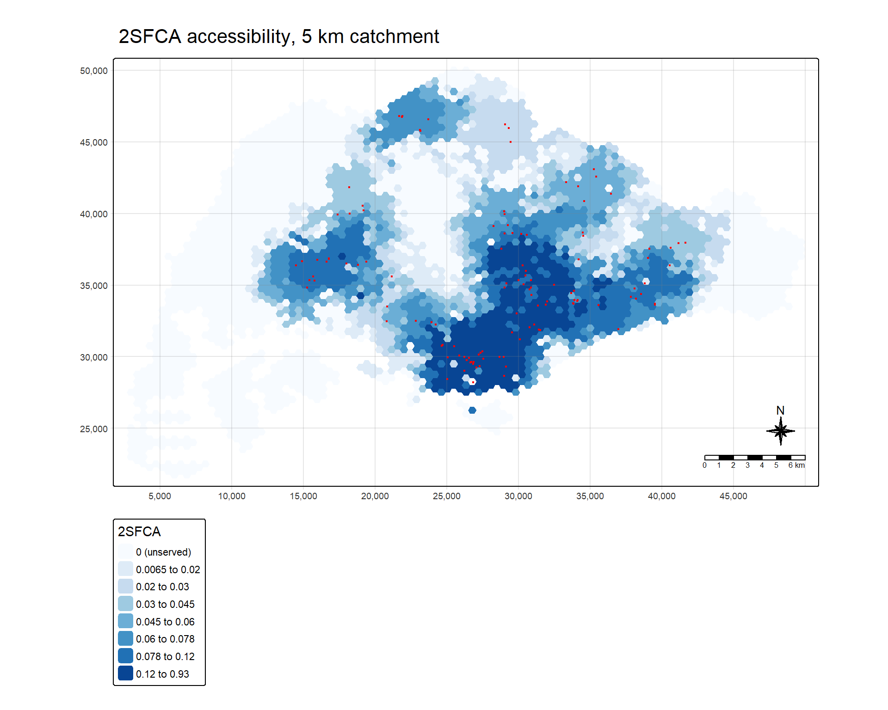
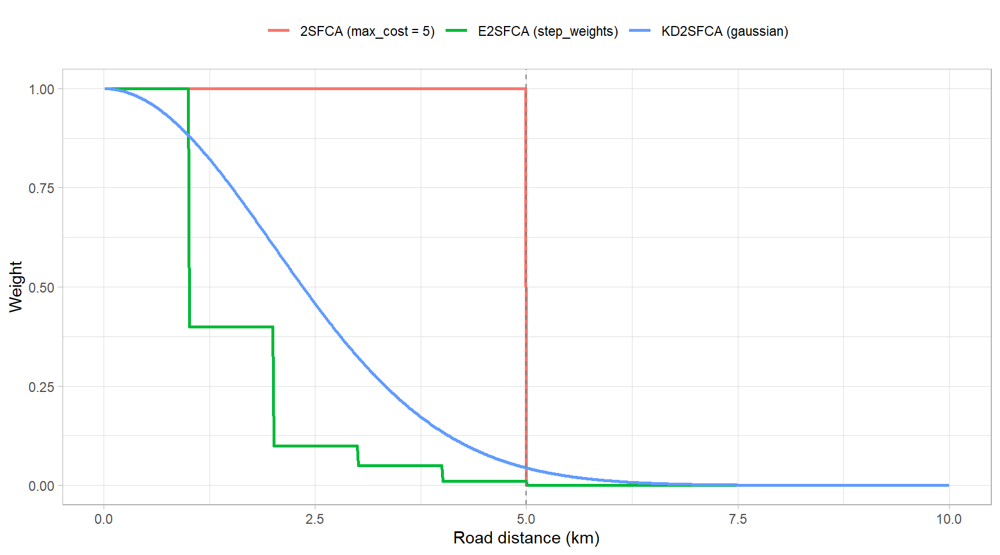
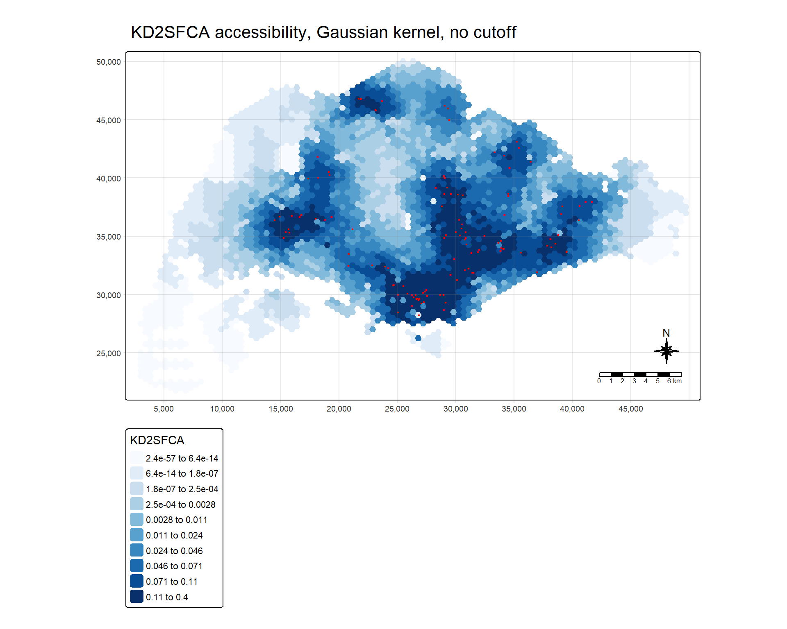
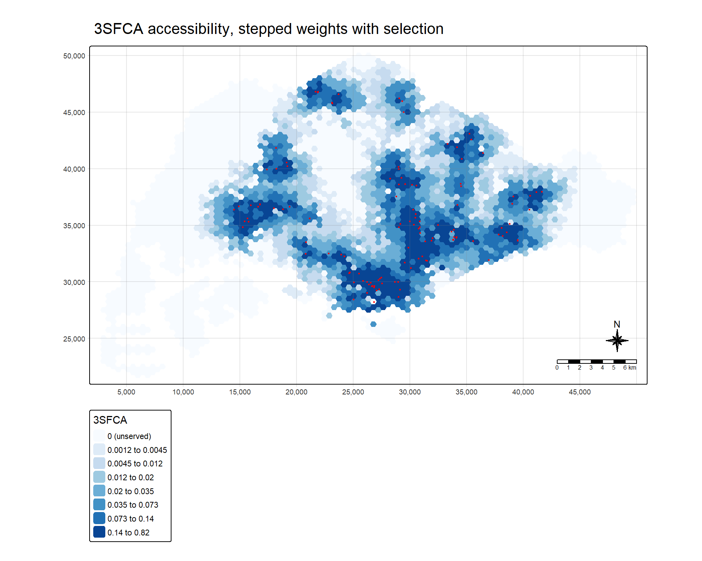
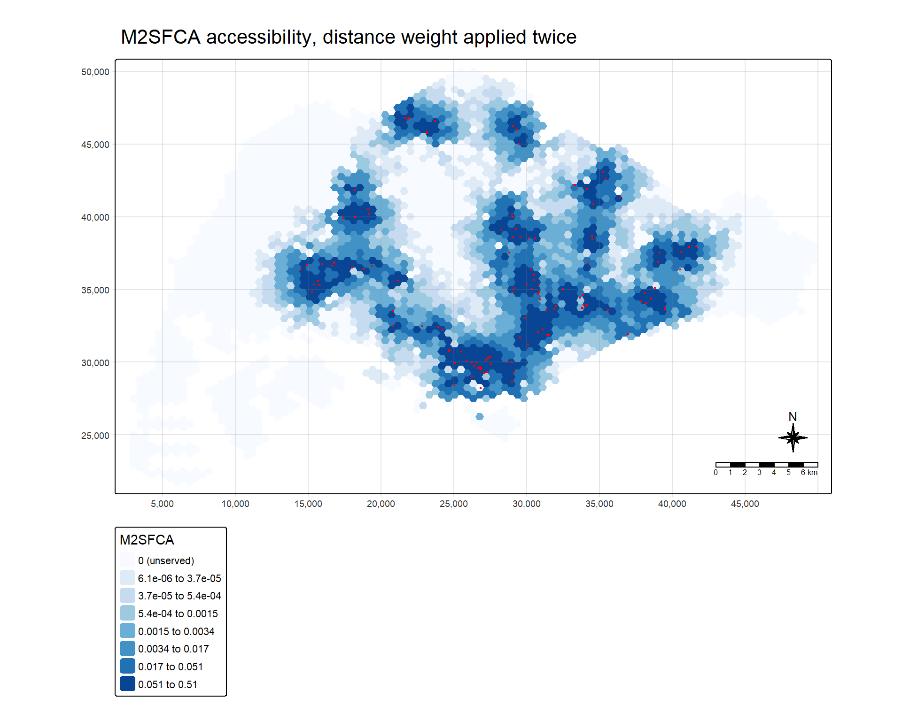

remotes::install_github("uva-bi-sdad/catchment")In-class Exercise 7: Floating Catchment Methods for Accessibility
Overview
Hands-on Exercise 7 modelled accessibility to 120 eldercare centres from a 3,125-cell hexagon grid, using a pre-computed road-network distance matrix and three measures from SpatialAcc: the Hansen potential model, KD2SFCA and SAM. The data import, the reprojection to SVY21, the reshaping of the 375,000-row origin-destination table into a 3,125 × 120 matrix, and all three of those measures are assumed here and are not taught again.
What the hands-on exercise did not cover is the floating catchment family as a family. KD2SFCA appeared there as one formula among three. Lesson 7 presents it as one member of a sequence of refinements to the two-step floating catchment area method, each answering a criticism of the one before. This exercise works through that sequence with the catchment package:
- the plain 2SFCA, with a hard 5 km catchment and no distance decay inside it,
- the enhanced 2SFCA (E2SFCA), which replaces the flat catchment with stepped distance bands,
- the kernel density 2SFCA (KD2SFCA), which replaces the steps with a continuous Gaussian kernel,
- the three-step FCA (3SFCA), which adds a selection weight so that demand is not counted in full at every centre it can reach, and
- the modified 2SFCA (M2SFCA), which applies distance decay a second time so that a centre that is reachable only from far away does not hand out its whole capacity.
Before any of them, the simplest measure of all is computed with the accessibility package: the road distance from each hexagon to its nearest centre. It is the baseline that every ratio measure below is read against.
Hands-on 练习 7 以 3,125 个六边形网格为需求、120 个乐龄中心为供给，借助一份预先算好的路网距离矩阵，用 SpatialAcc 的三种测度建模可达性：Hansen 潜能模型、KD2SFCA 与 SAM。数据导入、重投影到 SVY21、把 375,000 行起讫表整形为 3,125 × 120 的矩阵，以及这三种测度本身，在此都视为已知，不再重复讲解。
Hands-on 练习没有涉及的，是把移动搜寻域方法当作一个「家族」来看。KD2SFCA 在那里只是三个公式之一；第 7 讲则把它放在两步移动搜寻域法的一连串改进之中，每一步都回应前一步受到的批评。本练习用 catchment 包把这串改进逐一走一遍：
- 基础的 2SFCA：5 km 的硬性搜寻域，域内不做距离衰减；
- 增强型 2SFCA（E2SFCA）：把平坦的搜寻域换成分段的距离带；
- 核密度 2SFCA（KD2SFCA）：把分段换成连续的高斯核；
- 三步移动搜寻域法（3SFCA）：加入选择权重，使需求不会在它能到达的每一个中心都被全额计数；
- 修正型 2SFCA（M2SFCA）：再施加一次距离衰减，使一个只能从远处到达的中心不会把全部容量分发出去。
在这些之前，先用 accessibility 包计算最简单的测度：每个六边形到最近中心的路网距离。下文所有比值型测度都以它为参照来解读。
Getting Started
catchment is not on CRAN and is installed from GitHub. The chunk is shown but not run when the page is rendered, since installing a package is a one-off step rather than part of the analysis:
catchment 不在 CRAN 上，需要从 GitHub 安装。这一代码块只展示、渲染时不执行，因为安装包是一次性的步骤，不属于分析本身：
pacman::p_load(sf, tidyverse, tmap, accessibility, catchment)| Package | Role |
|---|---|
| sf | Importing and reprojecting the hexagon and eldercare layers |
| tidyverse | Reshaping the origin-destination table and joining results |
| tmap | Mapping each measure |
| accessibility | cost_to_closest(), the distance to the nearest facility |
| catchment | catchment_ratio() and catchment_weight(), the whole floating catchment family |
SpatialAcc, which carried the hands-on exercise, is not loaded. Every floating catchment variant below is a call to one function, catchment_ratio(), with a different weighting argument, and that is what makes it practical to set the variants side by side.
Hands-on 练习所依赖的 SpatialAcc 这里不加载。下面每一种移动搜寻域变体都只是对同一个函数 catchment_ratio() 的调用，区别只在权重参数，这正是把几种变体并排比较变得可行的原因。
tmap_mode("plot")Inputs Carried Over from Hands-on Exercise 7
Importing the two layers, reprojecting them to EPSG:3414, attaching the placeholder capacity and demand fields, and pivoting the distance table into a matrix whose rows follow the hexagons and whose columns follow the eldercare centres were all explained in Hands-on Exercise 7. The code is repeated only so that this document runs on its own. The subzone boundary layer is not imported: no step below summarises by planning region, so it would be read and never used.
导入两个图层、重投影到 EPSG:3414、加上占位用的 capacity 与 demand 字段，以及把距离表透视成「行对应六边形、列对应乐龄中心」的矩阵，这些都已在 Hands-on 练习 7 中讲过。这里重复代码只是为了让本文档可以独立运行。分区边界图层没有导入：下文没有任何一步按规划区汇总，导入它只会读进来而从不使用。
hexagons <- st_read(dsn = "data/geospatial",
layer = "hexagons", quiet = TRUE) %>%
st_transform(crs = 3414) %>%
select(fid) %>%
mutate(demand = 100)
eldercare <- st_read(dsn = "data/geospatial",
layer = "ELDERCARE", quiet = TRUE) %>%
st_transform(crs = 3414) %>%
select(fid) %>%
mutate(capacity = 100)
ODMatrix <- read_csv("data/aspatial/OD_Matrix.csv",
show_col_types = FALSE)
distmat_km <- ODMatrix %>%
select(origin_id, destination_id, total_cost) %>%
pivot_wider(names_from = destination_id,
values_from = total_cost) %>%
arrange(origin_id) %>%
select(all_of(as.character(eldercare$fid))) %>%
as.matrix() / 1000
stopifnot(nrow(distmat_km) == nrow(hexagons),
ncol(distmat_km) == nrow(eldercare),
!is.unsorted(hexagons$fid))
dim(distmat_km)[1] 3125 120The stopifnot() line carries the one assumption every catchment_ratio() call below depends on: the i-th row of the matrix is the i-th hexagon and the j-th column is the j-th centre. The function matches by position, not by identifier, so a matrix in a different order would run without complaint and return the wrong answer. Selecting the columns by eldercare$fid makes the column order explicit rather than relying on how pivot_wider() happens to sort them.
Every hexagon has a demand of 100 and every centre a capacity of 100. Those are placeholders, and they matter for reading every number below: with uniform supply and uniform demand, each measure describes the geometry of the road network and the locations of the centres, and nothing about how many older residents live where or how large each centre is.
stopifnot() 这一行承载了下文每一次 catchment_ratio() 调用所依赖的前提：矩阵第 i 行就是第 i 个六边形，第 j 列就是第 j 个中心。该函数按位置而非按编号匹配，顺序不对的矩阵照样能跑，只是给出错误答案。按 eldercare$fid 选列，是把列顺序写明，而不是依赖 pivot_wider() 恰好怎样排序。
每个六边形的需求都是 100，每个中心的容量也都是 100。这些是占位值，对解读下文所有数字都很关键：供给与需求都均匀时，每一种测度描述的都只是路网的几何与中心的位置，而不涉及老年居民实际住在哪里、各中心实际有多大。
Distance to the Nearest Eldercare Centre
Computing the closest distance
cost_to_closest() of accessibility takes the origin-destination table in long form, with columns named from_id, to_id and the cost, plus a land-use table that says how many opportunities sit at each destination:
accessibility 的 cost_to_closest() 接受长表形式的起讫数据，列名为 from_id、to_id 与成本列，另需一张土地利用表，说明每个目的地有多少机会（opportunity）：
ODMatrix_tidied <- ODMatrix %>%
select(from_id = origin_id,
to_id = destination_id,
dist = total_cost)
eldercare_lu <- eldercare %>%
st_drop_geometry() %>%
rename(id = fid)
dist2closest <- cost_to_closest(
travel_matrix = ODMatrix_tidied,
land_use_data = eldercare_lu,
opportunity = "capacity",
travel_cost = "dist",
n = 1)The land-use table is the eldercare layer, because the opportunities are at the destinations and the destinations are the centres. The lesson’s version of this call passes the hexagons instead, with demand as the opportunity column. It returns the same distances on this dataset, and the reason is a coincidence rather than a property of the method:
土地利用表用的是乐龄中心图层，因为机会位于目的地，而目的地就是中心。课上版本的这一调用传入的是六边形图层，并把 demand 当作机会列。它在这份数据上给出的距离完全相同，但原因是巧合，而不是方法本身如此：
dist_via_hexagons <- cost_to_closest(
travel_matrix = ODMatrix_tidied,
land_use_data = hexagons %>% st_drop_geometry() %>% rename(id = fid),
opportunity = "demand",
travel_cost = "dist",
n = 1)
c(centre_ids_also_hexagon_ids = sum(eldercare$fid %in% hexagons$fid),
same_result = identical(arrange(dist_via_hexagons, id)$dist,
arrange(dist2closest, id)$dist))centre_ids_also_hexagon_ids same_result
120 1 The function looks each to_id up in the id column of whatever land-use table it is given. The centres are numbered 1 to 133 and the hexagons 1 to 3,125, so every centre’s identifier also happens to be a hexagon’s, and every hexagon carries a demand of 100. Each lookup therefore lands on a non-zero value by accident. With real demand figures, where some hexagons hold no older residents, the lookup would treat the centres sharing those identifiers as having no places, and silently skip them.
As an independent check, the nearest distance is simply the row minimum of the long table:
该函数会到所给土地利用表的 id 列里查找每一个 to_id。中心编号为 1 到 133，六边形编号为 1 到 3,125，所以每个中心的编号恰好也是某个六边形的编号，而每个六边形的需求都是 100，于是每次查找都碰巧落在一个非零值上。换成真实需求数据，只要有些六边形没有老年居民，与之同号的中心就会被当成没有名额，悄无声息地被跳过。
作为独立核对，最近距离其实就是长表按起点取最小值：
brute_force <- ODMatrix_tidied %>%
group_by(from_id) %>%
summarise(dist = min(dist))
all.equal(arrange(dist2closest, id)$dist, brute_force$dist)[1] TRUEhex_acc <- hexagons %>%
left_join(dist2closest, by = c("fid" = "id")) %>%
rename(dist2closest = dist)
summary(hex_acc$dist2closest) Min. 1st Qu. Median Mean 3rd Qu. Max.
36.93 2183.12 4064.01 6104.84 8061.08 32450.08 c(over_2km = sum(hex_acc$dist2closest > 2000),
over_5km = sum(hex_acc$dist2closest > 5000))over_2km over_5km
2440 1281 The median hexagon is 4.06 km by road from its nearest centre, and the most remote is 32.5 km away, a figure that turns out below to be an artefact of the distance matrix. 2,440 of the 3,125 hexagons, 78 per cent, are more than 2 km from any centre, and 1,281, 41 per cent, are more than 5 km. That second count reappears below.
中位数六边形到最近中心的路网距离为 4.06 km，最偏远的达 32.5 km；下文会看到，这个数字其实是距离矩阵的伪影。3,125 个六边形中有 2,440 个（78%）距任何中心都超过 2 km，有 1,281 个（41%）超过 5 km。后一个数字下文还会再出现。
Mapping the closest distance
Every map in this exercise is drawn the same way, so the layout is written once as a function. The class breaks are computed inside it rather than left to style = "quantile", for two reasons that the later sections make concrete: several measures have a large block of values tied at exactly zero, which collapses the lower decile breaks into one, and one measure has values so small that default legend labels print them as zero or as a negative number. zero_class = TRUE gives the zeros a class of their own and splits the positive values into seven quantile classes; otherwise the values are split into deciles. fmt() writes each break to two significant figures, in scientific notation when it is very small:
本练习的每张地图画法相同，因此把版式写成一个函数。分级断点在函数内部计算，而不是交给 style = "quantile"，原因有二，后文会具体看到：有几种测度存在大量恰为零的并列值，会让较低的几个十分位断点挤成一个；还有一种测度的取值小到默认图例会把它印成零甚至负数。zero_class = TRUE 时零值单独成一类，正值再按分位数分七类；否则按十分位分级。fmt() 把每个断点写成两位有效数字，数值极小时改用科学计数法：
mapex <- st_bbox(hexagons)
fmt <- function(x) {
ifelse(x >= 100, formatC(round(x), format = "d", big.mark = ","),
ifelse(x == 0 | x >= 1e-3, formatC(signif(x, 2), format = "fg", digits = 2),
formatC(x, format = "e", digits = 1)))
}
acc_map <- function(data, var, title, zero_class = FALSE,
palette = "brewer.blues") {
x <- data[[var]]
if (zero_class) {
breaks <- unique(c(0, quantile(x[x > 0], probs = seq(0, 1, length.out = 8))))
labels <- c("0 (unserved)",
paste(fmt(head(breaks[-1], -1)), "to", fmt(breaks[-(1:2)])))
} else {
breaks <- unique(quantile(x, probs = seq(0, 1, by = 0.1)))
labels <- paste(fmt(head(breaks, -1)), "to", fmt(breaks[-1]))
}
fill_scale <- tm_scale_intervals(breaks = breaks, labels = labels,
values = palette)
tm_shape(data, bbox = mapex) +
tm_polygons(fill = var,
col = NULL,
fill.scale = fill_scale,
fill.legend = tm_legend(title = var)) +
tm_shape(eldercare) +
tm_dots(size = 0.15, fill = "red", col = "black") +
tm_title(title) +
tm_layout(frame = TRUE) +
tm_compass(type = "8star", size = 2) +
tm_scalebar() +
tm_grid(alpha = 0.2)
}acc_map(hex_acc, "dist2closest",
"Road distance to the nearest eldercare centre (m)",
palette = "-brewer.blues")
The palette is reversed here, so that dark means close, which keeps dark meaning good on every map in the exercise. Distance is short around each cluster of centres: the dense band in the south, Jurong in the west, Woodlands and Yishun in the north, and Tampines and Pasir Ris in the east. It is long in the Central Catchment Nature Reserve, which shows as a pale hole in the middle of the island, and across the far west and north-west, the eastern tip at Changi, and the southern offshore islands, which make up the top decile, partly for a reason the 2SFCA section uncovers.
这里把配色反转，让深色表示近，从而在本练习所有地图上深色都表示好。各个中心聚集处周围距离都短：南部的密集带、西部的裕廊、北部的兀兰与义顺，以及东部的淡滨尼与巴西立。距离长的地方是中央集水区自然保护区，它在岛中央显出一个浅色的空洞；还有最西部与西北部、东端的樟宜，以及南部离岸岛屿，它们构成最高的十分位，其中部分原因要到 2SFCA 一节才揭示。
Two-Step Floating Catchment Area (2SFCA)
The nearest-facility distance ignores two things: a hexagon near several centres is better served than one near a single centre, and a centre shared by many hexagons is worth less to each of them. 2SFCA accounts for both in two steps. First, each centre’s capacity is divided by the total demand within its catchment, giving a supply-to-demand ratio for the centre. Second, each hexagon sums the ratios of every centre within its catchment.
最近设施距离忽略了两件事：靠近多个中心的六边形比只靠近一个的服务更好；被许多六边形共享的中心，对每个六边形的价值更低。2SFCA 分两步同时考虑二者。第一步，把每个中心的容量除以其搜寻域内的总需求，得到该中心的供需比；第二步，每个六边形把自身搜寻域内所有中心的供需比相加。
step_weights <- list(c(5, .01), c(4, .05), c(3, .1), c(2, .4), c(1, 1))
hex_acc <- hex_acc %>%
mutate(`2SFCA` = as.numeric(catchment_ratio(
consumers = demand,
providers = eldercare$capacity,
cost = distmat_km,
max_cost = 5)))
summary(hex_acc$`2SFCA`) Min. 1st Qu. Median Mean 3rd Qu. Max.
0.00000 0.00000 0.02073 0.03840 0.06007 0.93136 max_cost = 5 sets the catchment at 5 km of road distance, and inside it every centre counts in full. The step weights are defined here for use in the sections that follow.
The result is in places per unit of demand. Its mean is 0.0384, which is exactly the total capacity of 12,000 divided by the total demand of 312,500, and that is not a coincidence: within the catchment, 2SFCA redistributes the supply rather than creating or losing any. The check in the comparison section confirms this for each variant.
max_cost = 5 把搜寻域设为 5 km 路网距离，域内每个中心都按全额计入。分段权重在此先行定义，供后续各节使用。
结果的单位是「每单位需求的名额」。其均值为 0.0384，正好等于总容量 12,000 除以总需求 312,500，这并非巧合：在搜寻域内，2SFCA 只是重新分配供给，既不凭空增加也不损失。比较一节的核对会对每种变体验证这一点。
c(zero_2SFCA = sum(hex_acc$`2SFCA` == 0),
same_cells_as_over_5km = identical(which(hex_acc$`2SFCA` == 0),
which(hex_acc$dist2closest > 5000))) zero_2SFCA same_cells_as_over_5km
1281 1 1,281 hexagons score exactly zero, and they are precisely the 1,281 hexagons that are more than 5 km from their nearest centre. That is the hard catchment at work: a hexagon 4.9 km from a centre gets that centre’s full ratio, and one at 5.1 km gets nothing.
Those zeros are also why the map below uses zero_class = TRUE. With 41 per cent of the values tied at zero, the first four decile breaks would all coincide.
有 1,281 个六边形恰好为零，它们正是距最近中心超过 5 km 的那 1,281 个。这就是硬性搜寻域的效果：距某中心 4.9 km 的六边形得到该中心的全部比值，5.1 km 的则一无所得。
这些零值也是下图使用 zero_class = TRUE 的原因：41% 的取值并列为零，前四个十分位断点会全部重合。
acc_map(hex_acc, "2SFCA", "2SFCA accessibility, 5 km catchment",
zero_class = TRUE)
The palest class is the unserved 41 per cent. Among the served hexagons, the highest ratios are in the south and the centre-east, where a hexagon’s 5 km catchment reaches twenty or more centres and their ratios add up. The north shows what the ratio adds to the distance map. Hexagons around Woodlands and Yishun sit close to a centre and were dark on the previous map, but they score in the middle classes here, because their few nearby centres are each shared by a large surrounding population.
最浅的一类就是未获服务的那 41%。在获得服务的六边形中，比值最高的在南部与中东部：那里一个六边形 5 km 的搜寻域能覆盖二十个以上的中心，它们的比值叠加起来。北部则显示了比值相对于距离地图多出的信息：兀兰与义顺一带的六边形离中心很近，在上一张图中颜色很深，但在这里只落在中间几类，因为附近为数不多的中心各自要被周围大量人口共享。
Hexagons with the same distance to every centre
The best-served hexagons in the south reach a median of 22 centres within 5 km. One hexagon, west of the centre of the island and surrounded by paler cells, is darker than any of them, and the summary above shows why it is worth looking at: the maximum 2SFCA score of 0.931 is more than four times the next highest. It turns out to be one of a group, found by checking the origin-destination table for origins whose cost is the same to every destination:
南部服务最好的六边形，5 km 内能覆盖的中心中位数为 22 个。有一个六边形位于岛中部偏西、四周都是较浅的网格，却比它们都深；上面的汇总也说明它值得一看：2SFCA 的最大值 0.931 是第二高值的四倍多。检查起讫表中「到每个目的地成本都相同」的起点，会发现它属于一整组：
constant_rows <- ODMatrix %>%
group_by(origin_id) %>%
summarise(distinct_costs = n_distinct(total_cost),
distinct_network_costs = n_distinct(network_cost),
total_cost = first(total_cost)) %>%
filter(distinct_costs == 1)
constant_rows %>%
summarise(hexagons = n(),
network_cost_also_constant = all(distinct_network_costs == 1),
within_5km = sum(total_cost < 5000),
min_cost = min(total_cost),
max_cost = max(total_cost))# A tibble: 1 × 5
hexagons network_cost_also_constant within_5km min_cost max_cost
<int> <lgl> <int> <dbl> <dbl>
1 159 TRUE 1 4974. 32450.159 hexagons, 5.1 per cent of the grid, have one identical road distance to all 120 centres, and in every case the network component of the cost is identical too. No real position on a road network is equidistant from 120 destinations spread across an island. These rows are routing artefacts in the supplied matrix: for each of these origins a single network path length was produced and copied to every destination.
Only one of them falls inside the 5 km catchment. Hexagon 1067 sits at exactly 4,974 m from every centre, so 2SFCA adds up the ratios of all 120 centres for this one cell, and it becomes the best-served hexagon in Singapore:
有 159 个六边形、即 5.1% 的网格，到全部 120 个中心的路网距离完全相同，而且每一个的路网成本分量也都相同。路网上没有任何真实位置会与散布全岛的 120 个目的地等距。这些行是所给矩阵中的路径计算伪影：对这些起点，只算出了一个路网路径长度，然后复制给了每一个目的地。
其中只有一个落在 5 km 搜寻域之内。1067 号六边形到每个中心都恰好是 4,974 m，于是 2SFCA 把全部 120 个中心的比值都加到这一个网格上，它就成了全新加坡服务最好的六边形：
hex_acc %>%
st_drop_geometry() %>%
mutate(rank_2SFCA = rank(-`2SFCA`, ties.method = "min")) %>%
filter(fid == 1067) %>%
select(fid, dist2closest, `2SFCA`, rank_2SFCA) fid dist2closest 2SFCA rank_2SFCA
1 1067 4973.89 0.9313638 1It ranks first under 2SFCA and nowhere near first under any method with distance decay, because a weight that falls with distance gives 120 centres at 4,974 m very little each. Its rank is 335 under E2SFCA, 149 under KD2SFCA, 1,479 under 3SFCA and 1,124 under M2SFCA. The flat catchment is what turns one bad row into the top of the map.
The other 158 are all more than 5 km away, so every measure with a catchment scores them zero whatever the true distance is. The measure they do distort is the nearest-facility distance, whose most remote cells they dominate:
它在 2SFCA 下排第一，而在任何带距离衰减的方法下都远非第一，因为随距离递减的权重给 4,974 m 处的 120 个中心每个都只有很小的分量。它在 E2SFCA 下排第 335，KD2SFCA 下第 149，3SFCA 下第 1,479，M2SFCA 下第 1,124。正是平坦的搜寻域把一行坏数据变成了地图上的最高点。
其余 158 个都在 5 km 以外，所以凡是有搜寻域的测度，不论真实距离是多少都给它们零分。真正被它们扭曲的是最近设施距离，最偏远的那些网格大多就是它们：
top_decile <- hex_acc$fid[hex_acc$dist2closest >=
quantile(hex_acc$dist2closest, 0.9)]
c(top_decile_hexagons = length(top_decile),
of_which_constant_rows = sum(top_decile %in% constant_rows$origin_id),
most_remote_is_constant_row =
hex_acc$fid[which.max(hex_acc$dist2closest)] %in% constant_rows$origin_id) top_decile_hexagons of_which_constant_rows
313 112
most_remote_is_constant_row
1 112 of the 313 hexagons in the top decile of distance have a constant row, and so does the single most remote one, the 32.5 km cell reported earlier. That figure is the copied path length of a failed route, not a measured distance to the nearest centre. The outer classes of the distance map are therefore partly a map of where the routing failed. All 159 hexagons are kept in the sections that follow, because removing them would change the grid that every method is compared on, but neither the 32.5 km maximum nor hexagon 1067’s 2SFCA score should be reported as a result.
距离最高十分位的 313 个六边形中，有 112 个属于常数行，最偏远的那一个、即前文报告的 32.5 km 网格也是。这个数字是一条失败路径被复制的长度，而不是测得的到最近中心的距离。因此距离地图外围几类，部分其实是一张「路径计算在哪里失败」的地图。后续各节保留全部 159 个六边形，因为删去它们会改变所有方法赖以比较的网格；但无论是 32.5 km 的最大值，还是 1067 号六边形的 2SFCA 得分，都不应作为结果报告。
Enhanced 2SFCA (E2SFCA)
The first criticism of 2SFCA is that it treats a centre 500 m away and one 4.9 km away as equally useful. E2SFCA keeps the 5 km outer limit and divides the catchment into distance bands with falling weights. With step_weights as defined above, a centre within 1 km counts in full, 1 to 2 km at 0.4, 2 to 3 km at 0.1, 3 to 4 km at 0.05, and 4 to 5 km at 0.01. The same weights are applied in both steps, to the demand a centre sees and to the supply a hexagon sees.
对 2SFCA 的第一项批评是：它把 500 m 外的中心与 4.9 km 外的中心视为同样有用。E2SFCA 保留 5 km 的外边界，但把搜寻域划成权重递减的距离带。按上面定义的 step_weights，1 km 内的中心全额计入，1–2 km 计 0.4，2–3 km 计 0.1，3–4 km 计 0.05，4–5 km 计 0.01。两步使用同一套权重，既作用于中心看到的需求，也作用于六边形看到的供给。
hex_acc <- hex_acc %>%
mutate(E2SFCA = as.numeric(catchment_ratio(
consumers = demand,
providers = eldercare$capacity,
cost = distmat_km,
weight = step_weights)))
summary(hex_acc$E2SFCA) Min. 1st Qu. Median Mean 3rd Qu. Max.
0.000000 0.000000 0.003798 0.038400 0.042698 0.744475 sum(hex_acc$E2SFCA == 0)[1] 1281The outer limit is unchanged, so the same 1,281 hexagons score zero. What changes is the spread among the rest: the median falls from 0.0207 to 0.0038 while the mean stays at 0.0384, because the supply that 2SFCA spread evenly across the catchment is now concentrated on the hexagons nearest each centre.
外边界没变，因此同样是那 1,281 个六边形为零。变化的是其余部分的离散程度：中位数从 0.0207 降到 0.0038，均值仍为 0.0384，因为 2SFCA 在搜寻域内平均摊开的供给，现在集中到了离各中心最近的六边形上。
acc_map(hex_acc, "E2SFCA", "E2SFCA accessibility, stepped weights to 5 km",
zero_class = TRUE)How the Weights Differ
2SFCA, E2SFCA and KD2SFCA differ only in the weight they give a centre at a given distance. catchment_weight() is the function catchment_ratio() calls internally to build that weight matrix, so applying it to a sequence of distances draws the three weighting schemes directly:
2SFCA、E2SFCA 与 KD2SFCA 唯一的区别，在于它们给某一距离上的中心多大权重。catchment_weight() 正是 catchment_ratio() 内部用来构建权重矩阵的函数，把它作用在一串距离上，就能直接画出三种权重方案：
d <- matrix(seq(0.01, 10, by = 0.01), nrow = 1)
weights <- tibble(
distance_km = as.numeric(d),
`2SFCA (max_cost = 5)` = as.numeric(catchment_weight(d, max_cost = 5)),
`E2SFCA (step_weights)` = as.numeric(catchment_weight(d, weight = step_weights)),
`KD2SFCA (gaussian)` = as.numeric(catchment_weight(d, weight = "gaussian"))) %>%
pivot_longer(-distance_km, names_to = "method", values_to = "weight")
ggplot(weights, aes(x = distance_km, y = weight, colour = method)) +
geom_line(linewidth = 0.9) +
geom_vline(xintercept = 5, linetype = "dashed", colour = "grey50") +
labs(x = "Road distance (km)", y = "Weight", colour = NULL) +
theme_light() +
theme(legend.position = "top")
The flat line is 2SFCA, the staircase E2SFCA, and the smooth curve the Gaussian kernel. The kernel in catchment is exp(−d² / 2s²) with a default scale of s = 2 km, and it has no cutoff: its weight at 5 km is 0.044 and at 10 km still 0.0000037, small but not zero. That single difference decides what the next section finds.
平直的线是 2SFCA，阶梯是 E2SFCA，平滑曲线是高斯核。catchment 中的核为 exp(−d² / 2s²)，默认尺度 s = 2 km，并且没有截断：5 km 处权重为 0.044，10 km 处仍有 0.0000037，很小但不为零。下一节的发现就取决于这一点差别。
Kernel Density 2SFCA (KD2SFCA)
hex_acc <- hex_acc %>%
mutate(KD2SFCA = as.numeric(catchment_ratio(
consumers = demand,
providers = eldercare$capacity,
cost = distmat_km,
weight = "gaussian")))
summary(hex_acc$KD2SFCA) Min. 1st Qu. Median Mean 3rd Qu. Max.
0.000e+00 2.157e-05 1.062e-02 3.840e-02 5.741e-02 3.977e-01 c(exactly_zero = sum(hex_acc$KD2SFCA == 0),
below_one_millionth = sum(hex_acc$KD2SFCA < 1e-6)) exactly_zero below_one_millionth
0 673 No hexagon scores exactly zero. Without a catchment limit every centre contributes to every hexagon, so the 1,281 hexagons that 2SFCA and E2SFCA left unserved now receive positive values instead. For many of them the value is positive only in a numerical sense: 673 hexagons, 21.5 per cent of the grid, score below one millionth, and the smallest value is of the order of 10−57. The kernel has not found service in those places. It has replaced a hard zero with a number too small to mean anything.
This is not the KD2SFCA of Hands-on Exercise 7. There, ac() of SpatialAcc was given d0 = 5, which truncates its kernel at 5 km, and it left exactly the same 1,281 hexagons at zero. The two methods share a name and a family, but one has a catchment and the other does not:
没有任何六边形恰好为零。没有搜寻域边界，每个中心都会对每个六边形有贡献，于是 2SFCA 与 E2SFCA 判为未获服务的那 1,281 个六边形，现在都得到正值。但其中很多只是数值意义上的正：673 个六边形、即 21.5% 的网格得分低于百万分之一，最小值在 10−57 的量级。核函数并没有在这些地方找到服务，它只是把一个硬性的零换成了一个小到毫无意义的数。
这并不是 Hands-on 练习 7 里的 KD2SFCA。那里给 SpatialAcc 的 ac() 传入了 d0 = 5，核在 5 km 处截断，结果恰好也是这 1,281 个六边形为零。两者同名、同属一个家族，但一个有搜寻域，一个没有：
kd_spatialacc <- as.numeric(SpatialAcc::ac(
hexagons$demand, eldercare$capacity, distmat_km,
d0 = 5, power = 2, family = "KD2SFCA"))
c(zero_spatialacc = sum(kd_spatialacc == 0),
zero_catchment = sum(hex_acc$KD2SFCA == 0),
spearman = round(cor(kd_spatialacc, hex_acc$KD2SFCA,
method = "spearman"), 3))zero_spatialacc zero_catchment spearman
1281.000 0.000 0.942 The two rank the hexagons similarly, at a Spearman correlation of 0.942, but they disagree on the one question a planner is most likely to ask, which is where the unserved areas are. A result labelled KD2SFCA is not fully specified until the kernel, its scale and its cutoff are stated.
两者对六边形的排序相近，Spearman 相关为 0.942，但在规划者最可能问的那个问题上意见相左：未获服务的区域在哪里。标为 KD2SFCA 的结果，只有写明核函数、尺度与截断距离后才算完整。
acc_map(hex_acc, "KD2SFCA", "KD2SFCA accessibility, Gaussian kernel, no cutoff")
With no ties at zero, deciles work here, and the legend shows the problem just described: the two lowest classes run from the order of 10−57 to 10−7. The map is smoother than the two before it, with no hard edge at 5 km, and it is visibly close to the nearest-distance map, which is the first hint of what the comparison section finds.
没有并列的零值，这里可以用十分位分级，图例也正好显示出上面说的问题：最低两类从 10−57 量级一直到 10−7。这张图比前两张更平滑，5 km 处没有硬边界，而且明显接近最近距离地图，这是比较一节所发现结果的第一个迹象。
Three-Step FCA (3SFCA)
2SFCA and its kernel variants share a second weakness: a hexagon within reach of three centres is counted as full demand at all three, so its demand is triple-counted. 3SFCA adds a step before the other two. Each hexagon’s weights are divided by their own total, giving a selection weight, the share of that hexagon’s demand assumed to go to each centre. In catchment_ratio() this is normalize_weight = TRUE:
2SFCA 及其核变体还有第二个共同弱点：能到达三个中心的六边形，会在三处都被按全额需求计数，即需求被重复计算了三次。3SFCA 在原有两步之前再加一步：把每个六边形的权重除以其自身权重之和，得到选择权重，即假定该六边形的需求流向各中心的份额。在 catchment_ratio() 中对应 normalize_weight = TRUE：
hex_acc <- hex_acc %>%
mutate(`3SFCA` = as.numeric(catchment_ratio(
consumers = demand,
providers = eldercare$capacity,
cost = distmat_km,
weight = step_weights,
normalize_weight = TRUE)))
summary(hex_acc$`3SFCA`) Min. 1st Qu. Median Mean 3rd Qu. Max.
0.000000 0.000000 0.005286 0.038400 0.035281 0.818821 The lesson passes step_weights positionally as the fourth argument. That works because the fourth formal argument of catchment_ratio() is weight, but naming it removes any doubt about which argument it lands on.
课上把 step_weights 作为第四个位置参数传入。这能工作，是因为 catchment_ratio() 的第四个形参正是 weight；但写明参数名，可以消除它到底落在哪个参数上的疑问。
acc_map(hex_acc, "3SFCA", "3SFCA accessibility, stepped weights with selection",
zero_class = TRUE)
Modified 2SFCA (M2SFCA)
The last variant addresses a property all the others share, visible in the mean of 0.0384 that each has kept. They all hand out a centre’s entire capacity among whoever is in its catchment, however far away that demand is. A centre whose only users are in the 4 to 5 km band still gives them its full 100 places, at a weight of 0.01. M2SFCA applies the distance weight again on the supply side, so that a centre that is only reachable from far away hands out correspondingly less. adjust_providers = function(w) w^2 squares the weight in the second step:
最后一种变体针对的是其余所有方法共有的一个性质，从它们都保持住的均值 0.0384 就能看出：它们都把一个中心的全部容量分给搜寻域内的人，不论这些需求有多远。一个中心若只有 4–5 km 带上的使用者，仍会以 0.01 的权重把全部 100 个名额分给他们。M2SFCA 在供给一侧再施加一次距离权重，使只能从远处到达的中心相应地分出更少。adjust_providers = function(w) w^2 在第二步把权重平方：
hex_acc <- hex_acc %>%
mutate(M2SFCA = as.numeric(catchment_ratio(
consumers = demand,
providers = eldercare$capacity,
cost = distmat_km,
weight = step_weights,
adjust_providers = function(w) w^2)))
summary(hex_acc$M2SFCA) Min. 1st Qu. Median Mean 3rd Qu. Max.
0.000e+00 0.000e+00 4.465e-05 1.361e-02 3.603e-03 5.064e-01 acc_map(hex_acc, "M2SFCA", "M2SFCA accessibility, distance weight applied twice",
zero_class = TRUE)
WarningThe lesson’s M2SFCA map shows 3SFCA
In the lesson’s version, the chunk that draws the M2SFCA map builds hex_M2SFCA and then passes hex_3SFCA and the column "3SFCA" to tm_shape() and tm_polygons(), under the title “M2SFCA Accessibility measures”. The displayed figure is the 3SFCA map with a different heading. The hidden code tab beside it plots the right object, so the slip is only visible when the two tabs are compared. The map above is drawn from the M2SFCA column.
The two maps would look alike in any case, because M2SFCA and 3SFCA rank the hexagons almost identically. Where they differ is in level, not in pattern, and that difference is what the next section measures.
即便如此，两张图看起来也会很像，因为 M2SFCA 与 3SFCA 对六边形的排序几乎相同。两者的差别在于水平而不在于格局，下一节测量的正是这一差别。
Comparing the Measures
Conservation of supply
If a method only redistributes the supply, then the accessibility of each hexagon multiplied by its demand, summed over the island, gives back the total capacity. The ratio of the two is therefore 1 for a method that conserves supply:
如果一种方法只是重新分配供给，那么每个六边形的可达性乘以其需求、在全岛求和，应当正好还原总容量。因此对守恒的方法而言，两者之比为 1：
methods <- c("2SFCA", "E2SFCA", "KD2SFCA", "3SFCA", "M2SFCA")
hex_acc %>%
st_drop_geometry() %>%
summarise(across(all_of(methods),
~ round(sum(.x * demand) / sum(eldercare$capacity), 3))) 2SFCA E2SFCA KD2SFCA 3SFCA M2SFCA
1 1 1 1 1 0.354Four of the five conserve supply exactly. M2SFCA allocates 35.4 per cent of the capacity and leaves the other 64.6 per cent unassigned. That is the intended behaviour, not a defect: the missing share is the capacity M2SFCA treats as lost to distance. It does mean the M2SFCA value cannot be read as places per person in the way the others can, and putting its numbers in the same table as 2SFCA’s without that caveat would make every hexagon look roughly a third as well served.
五种方法中有四种严格守恒。M2SFCA 只分配了 35.4% 的容量，其余 64.6% 未被分配。这是有意为之而非缺陷：缺失的那部分，就是 M2SFCA 视为被距离消耗掉的容量。但这也意味着，M2SFCA 的值不能像其他方法那样读作「人均名额」；若不加说明就把它与 2SFCA 的数字放进同一张表，每个六边形看上去都只获得了约三分之一的服务。
Rank agreement
hex_acc %>%
st_drop_geometry() %>%
select(dist2closest, all_of(methods)) %>%
cor(method = "spearman") %>%
round(3) dist2closest 2SFCA E2SFCA KD2SFCA 3SFCA M2SFCA
dist2closest 1.000 -0.888 -0.951 -0.973 -0.951 -0.958
2SFCA -0.888 1.000 0.958 0.941 0.945 0.938
E2SFCA -0.951 0.958 1.000 0.958 0.995 0.996
KD2SFCA -0.973 0.941 0.958 1.000 0.949 0.948
3SFCA -0.951 0.945 0.995 0.949 1.000 0.996
M2SFCA -0.958 0.938 0.996 0.948 0.996 1.000The five floating catchment measures rank the hexagons very similarly, with Spearman correlations from 0.938 to 0.996. The three that share step_weights, E2SFCA, 3SFCA and M2SFCA, agree with each other at 0.995 or above, so on this data the selection weight and the second distance decay change the level of the scores far more than their order. Plain 2SFCA agrees least with the others, at 0.938 to 0.958, as its flat catchment would suggest.
Every one of them also correlates with the plain distance to the nearest centre at between −0.888 and −0.973. With uniform demand and uniform capacity, most of what the ratio measures report is how close the nearest centres are. The competition term that distinguishes them from a distance map can only show its value when demand and capacity vary, which here they do not. The choices that do move the answer on this data are the ones the comparison above isolates: whether there is a hard catchment, which decides who counts as unserved, and whether supply is conserved, which decides what the numbers mean.
五种移动搜寻域测度对六边形的排序非常相近，Spearman 相关在 0.938 到 0.996 之间。共用 step_weights 的三种，即 E2SFCA、3SFCA 与 M2SFCA，彼此相关都在 0.995 以上；也就是说，在这份数据上，选择权重和第二次距离衰减改变的主要是得分的水平，而不是顺序。基础 2SFCA 与其余方法的一致性最低，在 0.938 到 0.958 之间，这与它平坦的搜寻域相符。
它们与「到最近中心的距离」之间的相关也都在 −0.888 到 −0.973 之间。在需求与容量都均匀的情况下，比值型测度报告的大部分内容，其实就是最近的中心有多近。让它们区别于距离地图的竞争项，只有在需求与容量有差异时才能显出价值，而这里并没有。在这份数据上真正改变答案的，是上面比较所分离出的两项选择：是否设硬性搜寻域，它决定谁被算作未获服务；以及供给是否守恒，它决定这些数字的含义。
Reference
- Kam, T. S. R for Geospatial Data Science and Analytics, Chapter 17: Modelling Geographical Accessibility.
- Luo, W. and Wang, F. (2003) “Measures of Spatial Accessibility to Health Care in a GIS Environment: Synthesis and a Case Study in the Chicago Region”, Environment and Planning B, 30(6): 865-884.
- Luo, W. and Qi, Y. (2009) “An Enhanced Two-Step Floating Catchment Area (E2SFCA) Method for Measuring Spatial Accessibility to Primary Care Physicians”, Health & Place, 15(4): 1100-1107.
- Dai, D. (2010) “Black Residential Segregation, Disparities in Spatial Access to Health Care Facilities, and Late-stage Breast Cancer Diagnosis in Metropolitan Detroit”, Health & Place, 16(5): 1038-1052.
- Wan, N., Zou, B. and Sternberg, T. (2012) “A Three-Step Floating Catchment Area Method for Analyzing Spatial Access to Health Services”, International Journal of Geographical Information Science, 26(6): 1073-1089.
- Delamater, P. L. (2013) “Spatial Accessibility in Suboptimally Configured Health Care Systems: A Modified Two-Step Floating Catchment Area (M2SFCA) Metric”, Health & Place, 24: 30-43.
- catchment, the package used for
catchment_ratio()andcatchment_weight(). - accessibility, the package used for
cost_to_closest().